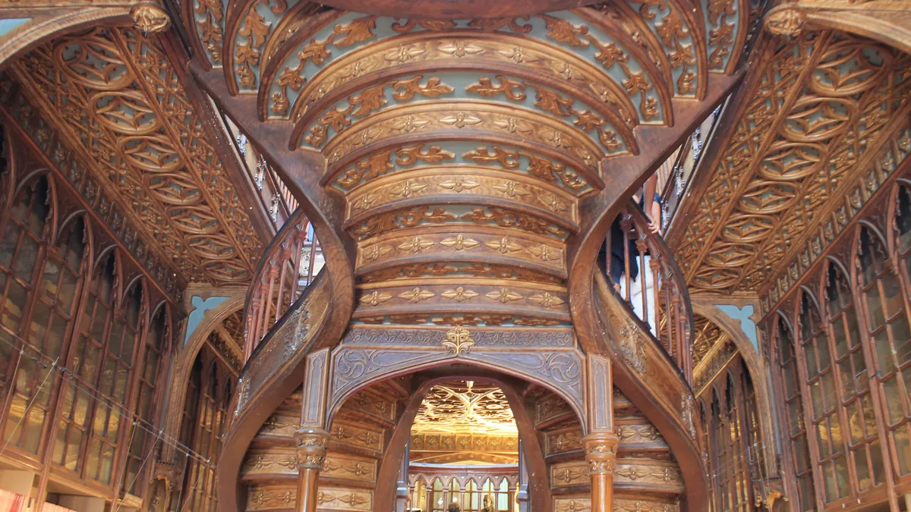

01
Livraria Lello
Livraria histórica€ 15,95
dedutível num livro da casa

John Samuel · CC BY-SA 4.0 · via Wikimedia Commons
Valor da entrada
Fonte: loja oficial de bilhetes da própria livraria (tickets.livrarialello.pt), consultada em 24/set/2026.
Ticket-Voucher Livraria Lello: € 15,95, visita livre.
O valor é dedutível num livro Edições Livraria Lello — é a informação que muda a conta e que quase nenhum guia traz. Quem compra uma edição da casa usa os € 15,95 como crédito, e a entrada sai de graça. Quem não compra nada paga os € 15,95 e pronto.
Não é ingresso comum, é voucher — a própria loja chama assim.
Ticket-Voucher Livraria Lello: € 15,95, visita livre.
O valor é dedutível num livro Edições Livraria Lello — é a informação que muda a conta e que quase nenhum guia traz. Quem compra uma edição da casa usa os € 15,95 como crédito, e a entrada sai de graça. Quem não compra nada paga os € 15,95 e pronto.
Não é ingresso comum, é voucher — a própria loja chama assim.
As outras quatro tarifas, e o que cada uma inclui
Mesma fonte, mesma data. A loja oficial vende cinco produtos diferentes, e três deles não são a visita padrão:
Combinado Livraria Lello + Fundação Livraria Lello: desde € 29,95, com entrada prioritária. A Fundação fica no Mosteiro de Leça do Balio, fora do centro, e abre de quarta a domingo, das 10h às 18h30. Inclui empréstimo de um de dois livros, devolvidos no fim.
Ticket-Voucher Gema: € 100,00, visita guiada à Sala Gema — coleção pessoal de Amy Winehouse e uma primeira edição de The Picture of Dorian Gray assinada por Oscar Wilde. Valor dedutível em edições especiais.
Ticket-Voucher Ai Weiwei: € 8,00 — e atenção: não inclui acesso ao edifício histórico da livraria. É só a exposição A4. Quem comprar este achando que é a entrada barata não entra na livraria.
Ticket-Voucher Porto.: € 15,95, com entrada prioritária, exclusivo para residentes do município do Porto.
Combinado Livraria Lello + Fundação Livraria Lello: desde € 29,95, com entrada prioritária. A Fundação fica no Mosteiro de Leça do Balio, fora do centro, e abre de quarta a domingo, das 10h às 18h30. Inclui empréstimo de um de dois livros, devolvidos no fim.
Ticket-Voucher Gema: € 100,00, visita guiada à Sala Gema — coleção pessoal de Amy Winehouse e uma primeira edição de The Picture of Dorian Gray assinada por Oscar Wilde. Valor dedutível em edições especiais.
Ticket-Voucher Ai Weiwei: € 8,00 — e atenção: não inclui acesso ao edifício histórico da livraria. É só a exposição A4. Quem comprar este achando que é a entrada barata não entra na livraria.
Ticket-Voucher Porto.: € 15,95, com entrada prioritária, exclusivo para residentes do município do Porto.
Horário
Fonte: rodapé da loja oficial, consultado em 24/set/2026.
Todos os dias, das 9h às 19h30.
Todos os dias, das 9h às 19h30.
Endereço
Rua das Carmelitas, 144 — 4050-161 Porto. Fonte: loja oficial, 24/set/2026.
Onde fica